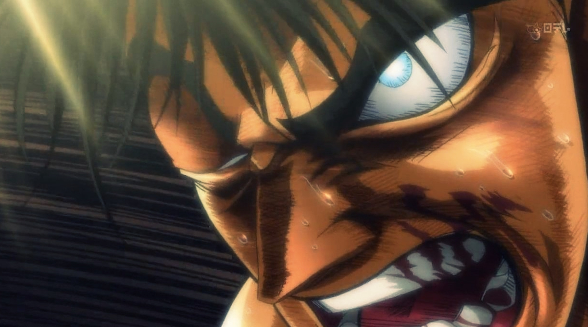
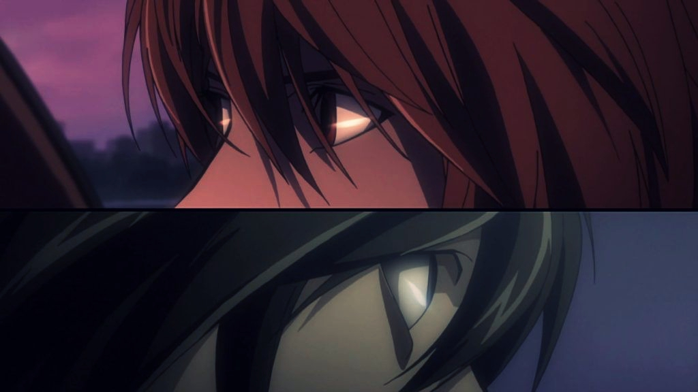
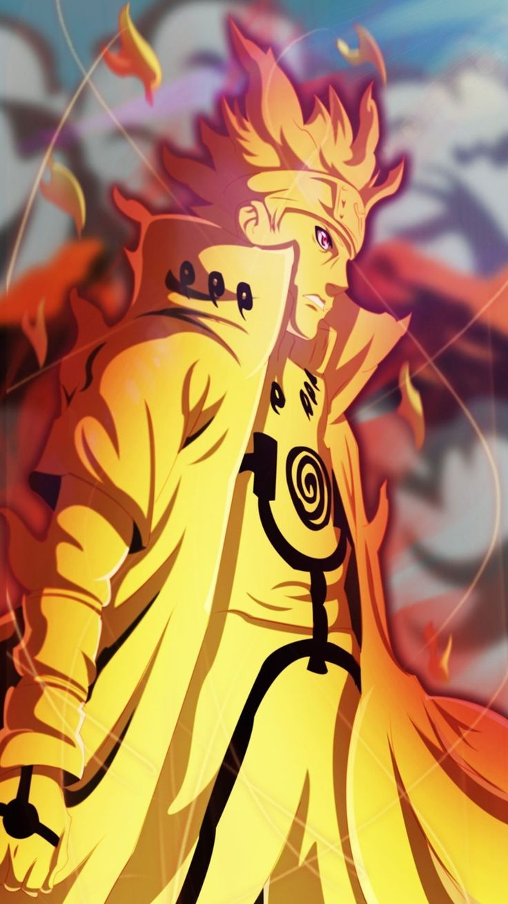

TOP 3 SHONEN ANIME ARC
Before we start, I want to give a shoutout to the owner of Lost in Anime, Guardian Enzo or known as Kitamura Kou in Twitter for inspiring me to make this post. You can check his version here for more reference. As a forever shonen-genre fanboy, this is probably the most enjoyable time I’ve spent making a post since the first time I start blogging, simply because I make what I like the most. Reminder this list is specifically rated based on arc only, not as a whole.
3. Hajime no Ippo: New Challenger – Takamura VS Hawk

When I think about any kind of the best list, sport-genre is always the first one comes into mind. When I think about sport, there’s no better story other than Takamura’s road to become the World Champion.
The preparations that Takamura did for his fight against Hawk to become the World Champion is the best possible example if you want to learn how to become the greatest athlete. Seeing the dedication from Takamura to break human’s limit again and again and again is something that I won’t forget in my life, this arc teaches me there’s no limit in human’s potential if you never give up. Boxing is like the simplest sport if you see it from the spectator chair, but this arc told me directly to the face ‘You have no fucking clue’.
2. Death Note – L

Death Note is almost perfect in every aspect, the weak point from the story is how it was finished, simply because they don’t finish it at the end of L arc. The thrill of psychological battle between Light and L throughout the story is out of this world. Light and L are the most intellectual main cast I’ve ever seen in an anime, and this series is like a chess game between them. They constantly trying to outsmart each other, and this rivalry never let you down. During these mental clashes, the magnificient of story won’t let you to blink an eye even for one second. There’s no better psywar story than Death Note. Tsugumi Ohba is a fucking genius.
The reason why this arc is not in number one because how the arc was finished. The ending of L arc is very visibly forced to continue the series. L is the peak of Death Note, if they continue the story after L, that mean they decide to destroy the legacy.
If Shonen-JUMP let Tsugumi Ohba end Death Note’s story until L and he makes the ending based on that in mind, Death Note potentially can become the greatest fictional story of all time.
1. Hunter X Hunter – Chimera Ant

Once upon a time, Naruto, Bleach, and One Piece called as the biggest three mainstream-genre title in Shonen JUMP. Ironically, there’s no arc story from these biggest three that can touch Hunter X Hunter – Chimera Ant’s story quality. Also, not even the most legendary manga of all time can topped it (Dragon Ball).
Chimera Ant is the best possible mainstream-genre story you can ask from a human, at least until this second. The only weak point in the story is the long build-up, but the reward of waiting is worth every second. The suspense you will feel in the story is priceless. You will get to see the greatest rage-moment from the main character in anime history, and the most beautiful ending from an arc. The ending is like an art, a masterpiece art.
If you already have your own version of best shonen arc in your mind other than Chimera Ant from Hunter X Hunter, watch this and your opinion will change. The only human in this world who I think that can potentially beat this arc’s quality is Eiichiro Oda. Let’s wait together for the final arc from One Piece.